Grok Bot 上手合集：入门、找模板、搭团队、进阶与风险
七篇 Grok Bot 上手帖合成一页，按四部分读：先入门（先只读、用现成模板、定期清理），再找模板（三个模板库，学别人怎么拆工作流），然后搭 Bot 团队（dr eggbot 与 Researchy、少而精、一个人带 20 多个 Bot），最后是进阶与风险（把博主蒸馏成 Bot、让总管 Bot 调度外部 harness）。各篇作者自述的效果仍标「未确认」，本页自己加的话标「补充」。
小墨 Article 小墨精读版（加密） 本页导读约 55 分钟
四部分：入门（小墨：第一天只读、第一周用现成、每半个月清记忆）→ 找模板（三个模板库，学拆法不囤模板）→ 搭 Bot 团队（SIAxiom 的 dr eggbot 与 Researchy、poteto 的少而精、GDegen 的 20 多个 Bot）→ 进阶与风险（蒸馏博主、多 harness 接入）。
合并说明：原来七个单页的地址都会自动跳到本页对应一节；各篇的「补充」「未确认」标记照旧保留；dr eggbot、Researchy 只在 SIAxiom 篇介绍一次。小墨原文的加密精读版仍在 原地址。
Grok Bot 从 0 到 1：先只读、用现成、定期清理
旧教程里申请开发者 App 的大半段可以扔掉了。小墨新 Article 把「装好以后怎么用」收成三件事：第一天只读验收 X，第一周用现成模板，每半个月清一次记忆。评论区也拿这三条治堆砌症。
链接：X Article · 入口帖 · 精读版
导读：门槛低了 ≠ 会用
原文 · 导读9 月 10 日那版里，为接 X 去申请的开发者账号、以及创建项目、还有 App，作者说如今大半都能省。
近月连发 49 篇相关内容，复盘出 5 点：接入方式变了；读数据、以及写草稿、还有看私信，都不再消耗 X 额度；连接器变强；三十美元档也能开；手机端打通。
门槛下来不代表马上会用。结论：开局抓住三件事即可。
时间戳写明：内容按 2026 年 10 月 29 日官方说明和他自己的使用对照过；变化快，以官方为准。
三件事
原文 · 三件事第一天：挂上 X，丢一条只读指令捞出最新三条帖，再亲手核对。
第一周：别自己堆提示词，先去模板市场挑现成 Bot，做完一件真任务。
之后每半个月：跑一轮记忆大扫除，清掉过期规则。
派活，而不是问答
原文 · 派活闲聊型偏对话，夹杂搜索，再加生成，说完就停。带云电脑的这边会去开浏览器，接着用终端，再去调用插件；对话关掉任务也能续。心态改成派活。
只读验收 X
原文 · 只读验收旧流程里的 Developer Account，以及 Default Project，再加建 App，整段可删。现在直接在 Bot 里授权 X。
第一次挂外部能力，先派只会读的活：搜帖、看时间线、查资料。发帖，或删除，或关注，或付费调用，等稳了再开。
界面写着已安装，或显示 Connected，都不够。进得了真工具、拿得回可核对的结果，才算真正能用。
验收指令大意：只读；回报账号名称；以及最新三条原创帖的时间、链接、互动数据；引用单列；花费高先问。数字要对着 X 页面再核一次。
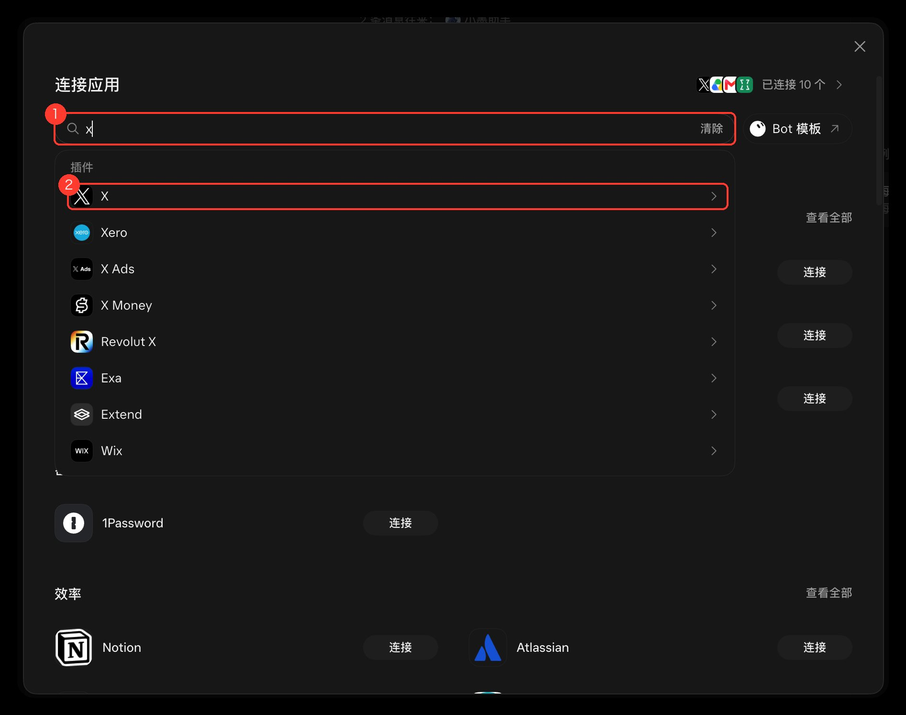
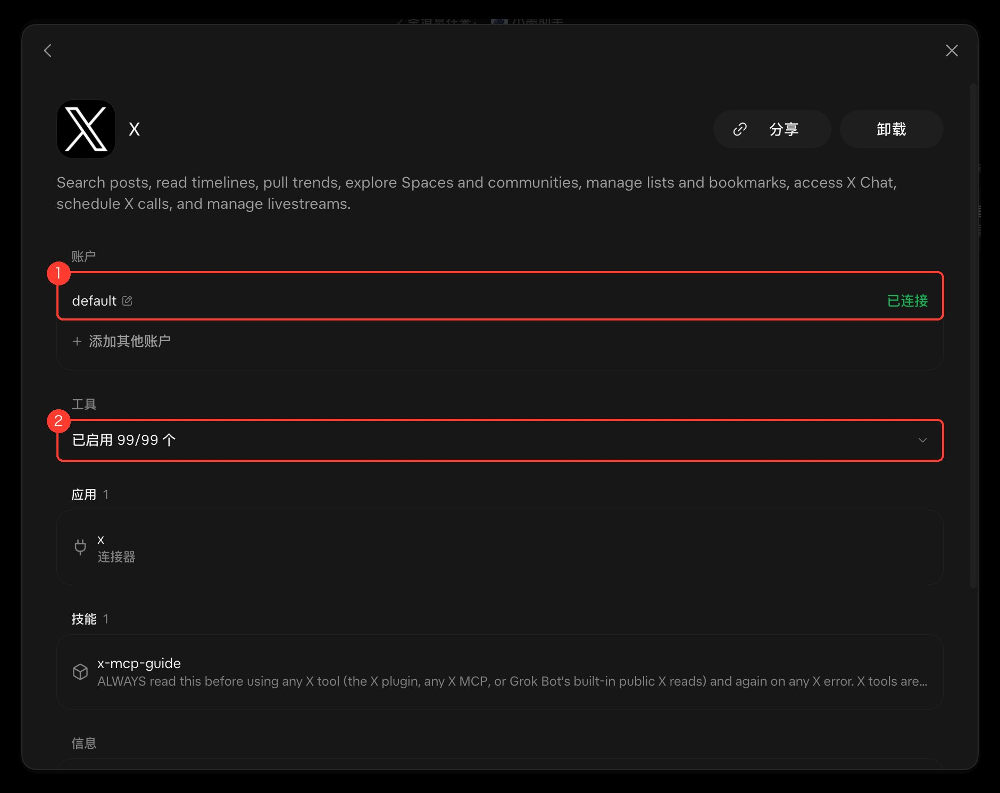
用现成模板
原文 · 用现成自己空白开写提示词，容易越写越乱。官方库整理了 56 个场景，社区里的模板还要多。
优先逛官方模板市场，入口在 x.ai/bot/marketplace。
Grok Bot Index 自称收了 487 个模板。
Grokdex 能看社区排行。
AI Agents Grok Bot Hub 列出 273 个 Bot、19 个插件。
GitHub 上的 awesome-grok-bot 在收集提示词与配置。
大家共用同一台云电脑，浏览器登录态也共享。装前看权限；若模板要发帖，或要删除，或要付费调用，或要读密码，先别往接了密码库的号上装。
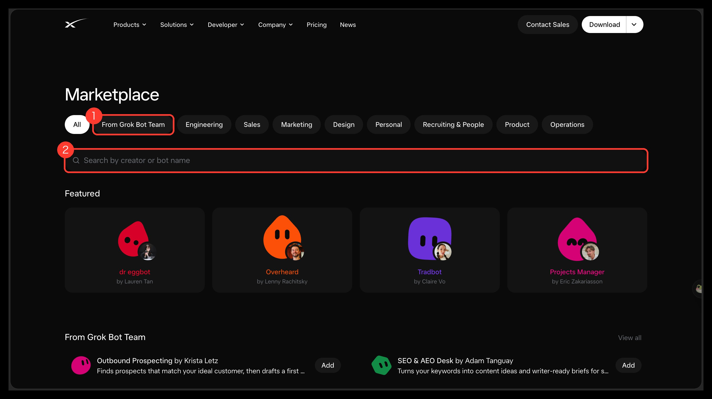
记忆大扫除
原文 · 记忆大扫除记忆、人设，再加上 Skills，叠多了会重复、冲突，看起来越用越笨。记忆不好精确删，建议每半个月清一次。
一条规则只放一处：长期偏好进记忆，具体流程进 Skill。
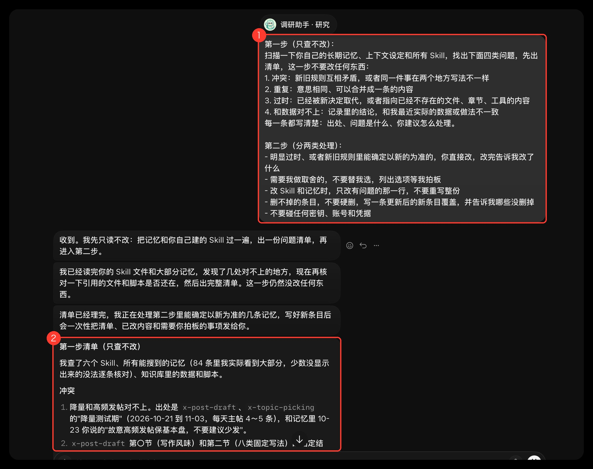
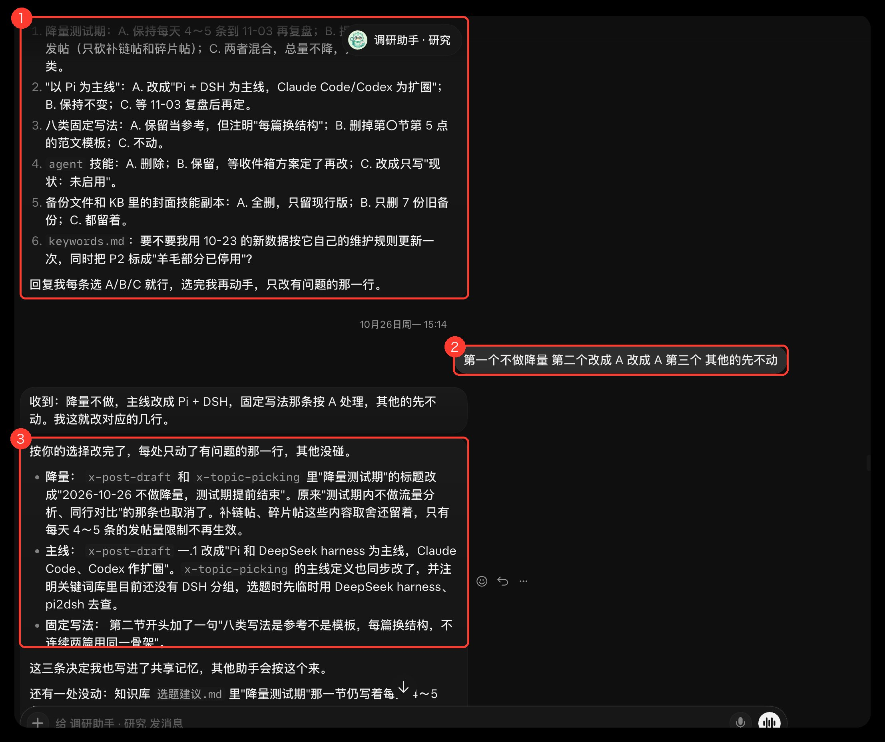
收束与评论区
原文 · 收束清单可能过时，但「先只读」加上「用现成」再加「定期清理」，他认为能长期管用。
进得了真工具、拿得回正确结果，Agent 才值得接着用。
这篇 Article 另有一条 X 入口帖，下面的评论区就挂在那条帖下，后文引的读者回复都出自那里：入口帖。
@ddny09 说「先只读」「用现成」「定期清理」治好了堆砌症。
@hodu382759 觉得省掉申请步骤轻松不少。
补充：精读版含 Article 全文与其余场景（邮箱密码、写代码、备份额度、速查表），见页首链接。
三个 Grok Bot 模板库，以及怎么从模板学工作流
btcup99 推荐了三个找 Bot 模板的地方：Bot Shelf、UseGrokBot 和官方 Marketplace。SIAxiom 同一天写了配套思路：比起模板本身，更值得学的是看懂别人怎么拆工作流，再改成自己的。两帖合在这一节：先认清三个库各管什么，再按「找一个 → 拆逻辑 → 改造 → 自动化」练一遍。
链接：btcup99 帖 · SIAxiom 帖 · Bot Shelf · UseGrokBot 模板 · 官方 Marketplace
三个库各管什么
原文 · 三个库btcup99 的说法：这三个仓库能把几百款技能变成你自己的，建议收藏。
第 1 个：Bot Shelf（网站）：海外玩家做的 bot 库，覆盖面最全；发帖时已收 5800+ 模版、3000 多个创作者，可一键添加、追踪原作者的 X，也能投稿自制模版。
第 2 个：UseGrokBot（网站）：社区网站，包含多个模版，另有详细的使用案例和实现原理，适合弄懂每个 bot 怎么工作，也能提交自己的。
第 3 个：官方 Marketplace（x.ai/bot/marketplace）：官方仓库，覆盖销售、设计、工程、设计师、运营等方向的成熟 bot 模版。
用法很朴素：收藏起来，需要时再来找。
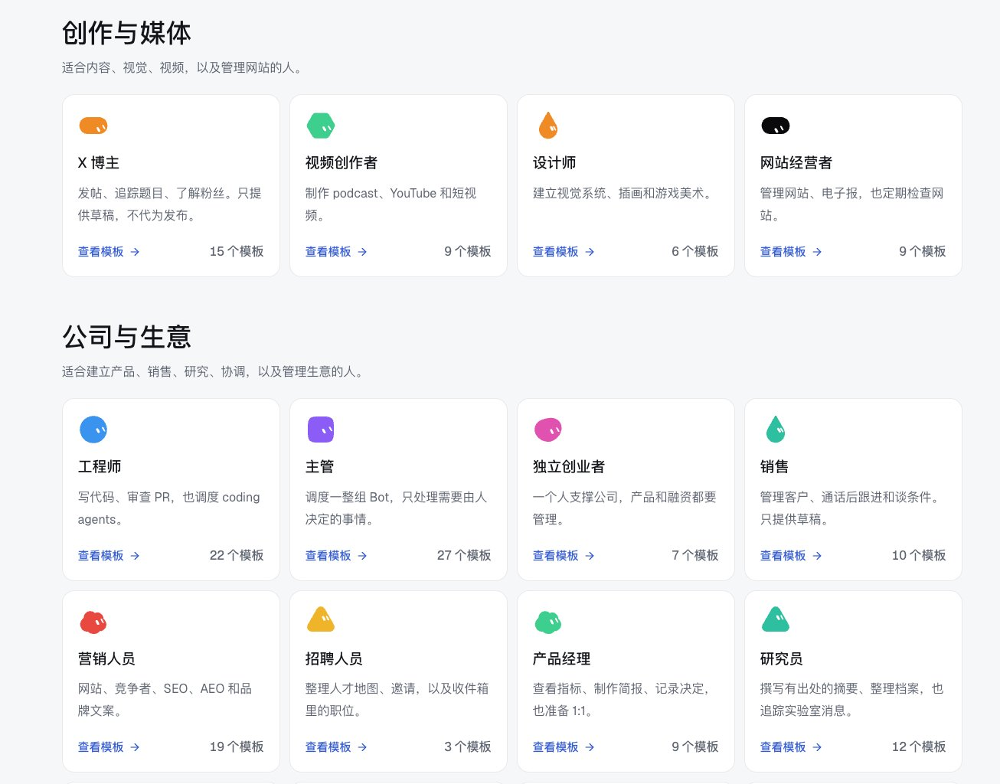
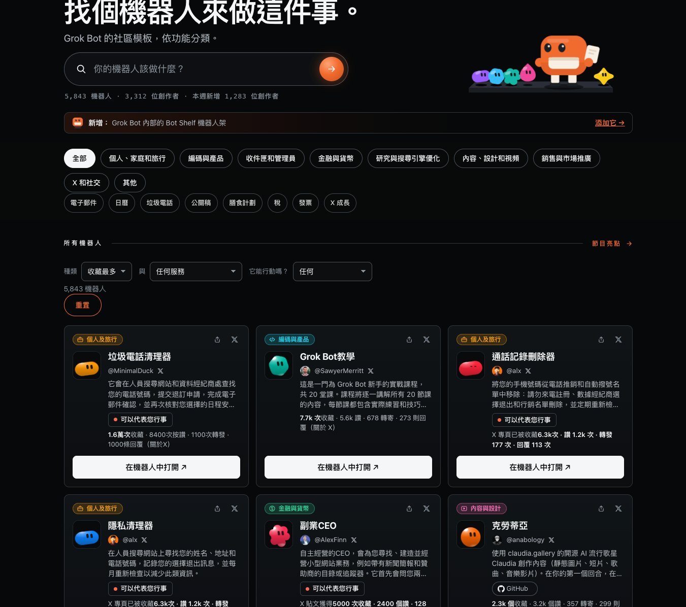
补充：截图里的数字是 2026-10-28 前后的快照，会一直变；以站点当前页面为准。
怎么学：看懂工作流，而不是囤模板
原文 · 学工作流SIAxiom 深挖过 Bot Shelf 和 UseGrokBot，结论是：学 Grok Bot 最有价值的，是学会别人怎么设计工作流，再搬到自己的实际需求上。
两站分工：UseGrokBot 看真实案例，学别人怎么解决问题；Bot Shelf 拿现成模板，研究别人怎么拆任务、怎么做自动化流程。
他推荐的学法是四步：先找一个有价值的 Bot → 拆它的工作逻辑 → 按自己需求改造 → 跑成自动化。
例子是运营 X 账号：盯住优质账号 → 找出热门内容 → 从评论区挖需求 → 攒成选题库 → 出原创推文草稿。Bot 管信息筛选，时间留给思考和创作。
关键提醒：别急着学 100 个 Bot，先把一个用到极致；会复利的是一点点攒下来的工作流。
资源链接：Bot Shelf、UseGrokBot。
补充：（本页判断）：例子里最后一步停在「草稿」，发不发仍由你决定；导入任何模板前，先看它会不会替你执行动作、要哪些账号权限。
用 bot 管 bot：dr eggbot 与 Researchy「情报大脑」
SIAxiom 连写两帖拆 Grok Bot Marketplace 里的两个角色：dr eggbot 负责设计、创建和体检其他 Bot；Researchy 负责给其他 Bot 搜资料、核事实。两帖合在这一节：先看 dr eggbot 的 9 个功能和用法，再看 Researchy 的分工、导入和权限风险。作者自己承认 Researchy 缺少独立评测，本页照实写明。
链接：dr eggbot 帖 @SIAxiom · Researchy 帖 @SIAxiom · dr eggbot Marketplace · Researchy Marketplace
导读：一个管 bot，一个查资料
原文 · 导读第一帖的切入点：别再一个个手动指挥 AI。dr eggbot 能替你建机器人、分配任务、查运行结果，还能看 Token 是否浪费。
你说清想做的事，它就建一个专职 Grok Bot，比如收 AI 新闻、写文章、分析数据、检查代码；之后还能指出哪里做错、哪些任务重复、哪些需要改进。作者归纳成 9 个功能。
两帖原文：dr eggbot 帖、Researchy 帖。
dr eggbot 功能 ❶–❺：建、分工、体检
原文 · 功能上❶ 一句话建 Bot：说目标、答几个问题，它用 CreateAgent 建出来；研究、写作、编程、市场监测、数据分析都能配。
❷ Poteto Mode：一次只盯一个核心任务，少写复杂代码、少重复操作，做完要自查结果，少走弯路。
❸ 按岗位建：研究 Bot 找资料、写作 Bot 整理内容、编程 Bot 写代码，另有监测 Bot；职责和可用工具都提前设好。
❹ 查出错：用 transcript-healthcheck 翻历史对话，看哪些地方常出错、有没有反复白干、哪些问题老要你纠正，再给调整建议。
❺ 查 Token 浪费：用 routine-healthcheck 查自动任务，找重复执行、没用的任务和多余消耗；Bot 一多就很有用。
dr eggbot 功能 ❻–❾：界面、验证、定检、权限
原文 · 功能下❻ 专属界面：用 Make Bot UI 设计按钮、表单和仪表盘，配好 Webhook 后在页面上点按钮就能操作 Bot。
❼ 代码自验证：给编程 Bot 配代码验证技能，写完接着运行测试、检查构建，有问题再改，减少写完跑不起来。
❽ 定期体检：先设好设计规范、模板，再加健康检查任务，定期看运行情况；发现问题先提建议，改不改由你决定。
❾ 限定能做什么（作者说这点很重要）：监测 Bot 只搜集、不能擅自发布；写作 Bot 能写，发送前要你确认；Webhook 密钥等敏感操作也能限权。
这 9 个功能串成一条流程：建 Bot → 派任务 → 执行 → 查结果 → 找问题 → 调整优化；同时管几个 Bot 时能省掉不少重复操作。
怎么用 dr eggbot
原文 · 用法作者给的五步：打开官方的 dr eggbot 页面 → 点 Import Bot 导入到自己账号 → 说要建什么 Bot → 按提示配技能、权限和自动化任务 → 先试跑，确认没问题再正式用。
他附了一段提示词，大意：建一个 AI 情报 Bot，每天盯 X 上新出的 AI 产品、重要更新和热门技术，出中文报告，附原始链接、去重；未经批准禁止自动发帖；建完再查 Skills、自动化任务、Token 花费和验证流程。
他认为最值得研究的是「管别的 Bot」：一个找资料、一个整理、一个查代码，再让 dr eggbot 看它们跑得怎样，重复活就交出去。
起步建议：已经在用 Grok Bot 的话，先建一个每天整理 AI 新闻的 Bot，跑通再加别的。
官方入口：dr eggbot Marketplace 页面。页面自我介绍：设计高质量 Grok Bots，先问几个偏好问题，再用 CreateAgent 创建。
补充：@poteto 主帖里的入口 bot 链接，打开后也是 dr eggbot（本页 2026-10-31 用 curl 核对页面标题）。
Researchy：给别的 Bot 做研究
原文 · Researchy第二帖先问一个问题：多个 AI 一起调查市场、分析竞争对手、定策略时，谁来保证它们用的信息可靠？
作者研究了 Marketplace 里的 Researchy：它专门为别的 AI 搜集资料、核查事实、做研究支持，团队可以让它管信息，其他 Bot 管分析和执行。
AI 帮 AI 做研究：Researchy 的创建者是 Farzad，分工是资料搜集、事实核查，加上研究内容、做 SEO 调研；按公开配置，其他 Bot 能向它提研究请求，比如营销 Bot 托它查对手新品，分析 Bot 让它找原始资料，策略 Bot 参考它的结果，以此减少重复搜索。
能力特点：公开配置写着用 Grok 4.6，带实时联网搜索和较高强度推理，适合查找资料、对比信息、整理证据。
作者自己划的两条线：一、没有足够证据表明它另有一套普通 Grok 用不到的搜索资源；二、推理强度高不等于事实更准。到底强过普通 Grok 多少，得实测。
Marketplace 页面自我介绍：一个研究与事实核查台，每一轮都用最新 Grok 模型加实时联网搜索。
协作分工、导入注意、权限风险
原文 · 风险四 Bot 分工（进新市场为例）：Researchy 去搜对手的产品、价格、用户的评价和最新动态；分析 Bot 比资料、找趋势和机会；策略 Bot 定产品定位、定价方案和经营策略；执行 Bot 整理报告和任务清单，要紧操作交人工审核。关键是每一环都留住信息来源，后面的 Bot 才能查依据。
导入注意：Marketplace 能分享和复用配置，但导入成功不代表原作者的全部工具和运行环境都跟过来，有些要额外安装、授权或配置；先查实际能用什么，免得和演示差太远。
数据安全：作者引官方文档说，同一账户里的几个 Bot 可能共用一台云端电脑，文件与浏览器登录状态也共用；Researchy 公开的配置里还带自动批准工具操作的设置，所以权限要格外留意。
他的建议：查公开资料优先放低权限环境；不给研究 Bot 开不必要的敏感账户；涉及客户数据、企业文件以及重要操作的，留给人工审核。协作越深，权限管理越要紧。
可核查报告，以及「缺独立评测」
原文 · 未评测推荐玩法：让它出可核查的调查报告，比如查近 30 天 AI Agent 领域有哪些重要变化，先看官方公告与原始资料；每条结论附发布日期和来源链接；来源冲突时把各方说法并列；确认不了的明确标出；最后整理成方便其他 AI 接着分析的报告。
这样的结果更好查、也便于多个 Bot 共用；但来源是否真实、结论又是否准确，仍要人工去核。
未确认：Researchy 究竟比普通 Grok 强几分。作者明说眼下没有足够可靠的独立测试数据。
他设想的测法（尚未执行）：挑 20 个真实研究任务，Researchy 和联网的普通 Grok 各做一遍，比五项：一手资料覆盖率、来源的可靠性和可核查性、事实错误与遗漏、人工核查耗时、综合成本。测完才知道专业化设计带来多少提升。
补充：本页没有找到任何第三方对 Researchy 的独立评测；帖里关于能力的描述来自公开配置和作者判断，效果标「未确认」。
作者的总结：Researchy 演示了多个 AI 怎么协作——研究 AI 搜集核实，分析 AI 整理数据、发现问题，策略 AI 定方案，执行 AI 落实。
他认为信息质量会决定协作效果，好团队要有可靠的研究，也要清晰的分工，还要证据来源与安全边界；Researchy 的思路已经摆出来，实际效果还待更多测试。AI 给 AI 供信息时，谁来核查会越来越重要。官方配置：Researchy Marketplace 页面。
poteto 团队原则：少而精的 Grok Bot，加一条蒸馏例程
Lauren Tan 用一条短帖讲她怎么建高质量 Bot、怎么带团队：人不用多，用 dr eggbot 设计 Bot，让 Bot 自己写 Skill，接上 connector 和 vault，把 Bot 当成新入职的实习生，最后用语音倾倒信息并让它复述核对。旁边还有 @erichsu_eth 从 @OKxiaohai 学来的「定期蒸馏 poteto」例程，提示词可直接粘贴。
链接：主帖（配套三帖见下文）
导读：谁在讲、讲什么
原文 · 导读作者是 Lauren Tan（@poteto），参与开发 Grok Bot，这条帖是「高质量 Bot + 团队管理」短指南。她建议先让 @bot 读这条，再帮你改进团队。
她给的入口 bot 在这个页面。
配套三帖：erichsu 的蒸馏例程、海哥的同思路帖、苏哈的中文转述。
中文入口来自 @SUOHA_AI：他把 Lauren 比作 Codex 侧的 Tibo，建议把主帖喂给自己的 Bot，跟它一起讨论，吃透这些思路，再改管理流程。
补充：「相当于 Codex 的 Tibo」是 @SUOHA_AI 的比喻，不是 Lauren 原话。
六条原则：少而精、会写 Skill、接好工具
原文 · 六条原则用 dr eggbot 建 Bot：把 dr eggbot 加进团队，当 bot 设计师专门建 Bot（它能做什么见上一篇 SIAxiom）。
少而精：不必堆很多；few good 个好用的，往往比一大队更好管。
让 Bot 给自己写 Skill：一边教一边让它写成 Skill，长对话也更稳；可建 github repo 单独存。
接 connector，用 vault：接上干活用的工具，并用 the vault；也可让 Bot 自开邮箱、自注册账号以隔离身份。
把粘贴步骤交给它：凡还在手工做、或要 copy and 粘回 Bot 的步骤，都问它能不能替你做。
当成实习生入职：当作刚招了 an intern：先介绍你自己和工作，再问它能自动做哪些。
最爱的一招：倾倒信息，再让它复述
原文 · 复述核对她最喜欢的一招：用语音或转写做 brain dump；讲完后让它用自己的话复述，确认听懂。
蒸馏例程：只报值得抄的变化
原文 · 蒸馏例程这招来自 @OKxiaohai，由 @erichsu_eth 写成可粘贴提示词：让 Bot 定期看 @poteto 新帖，学产品侧怎么用。Lauren 参与开发，用法时效性高。
例子 tibot：盯提及和关键词，过滤噪音、翻译，定时整理成短摘要，发帖仍自己写。
以及给例程体检：哪些闲置、哪些太烧额度；回看平时纠正处，决定技能和例程怎么改。
让 Bot 每天翻一翻，对照自己的任务挑一两条试；频率可自调。
硬约束：每天查看新帖、长文和相关回复；关注 Grok Bot 的技能与例程、额度和验证方法；只报值得借鉴的，附原帖链接、适用场景和可粘贴建议；先给建议，改动由我确认；没料就安静；失败要说明；不要代发帖。
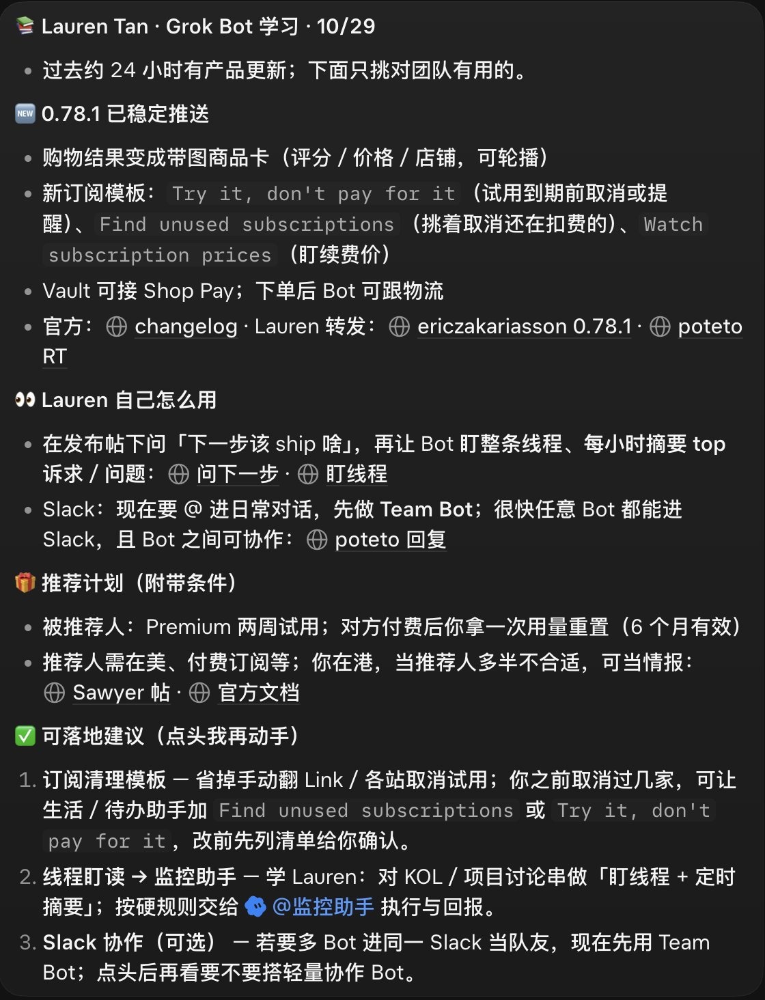
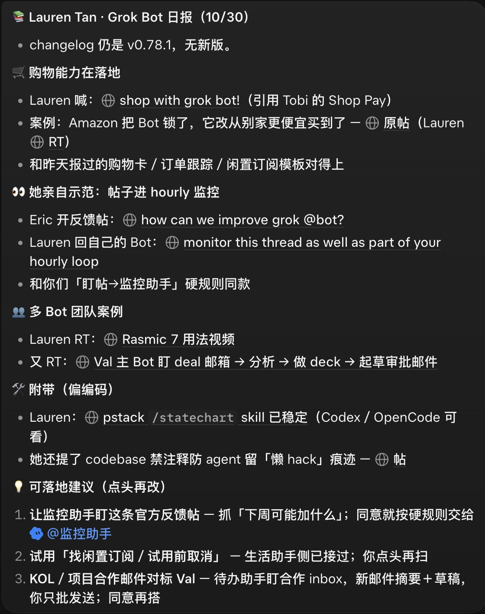
补充：本页判断：可先每周跑一次，确认抓取稳定后再加密到每天。这是频率建议，不是原文要求。
同思路与中文入口
原文 · 相关帖@OKxiaohai 更短：叫 Grok bot 天天把 poteto 蒸馏一遍，再把这股精神用到自家 bot 团队上。他转引的正是 erichsu 那条。
GDegen《Grok Bot is all you need》：一个人加 20 多个 Bot
GDegen 用一篇繁体长文讲他怎么用 Grok Bot 做内容和个人品牌：一个 Bot 只做一件事，20 多个 Bot 互相交接；一条自动回复带来 53,391 曝光；换掉 Hermes 和小龙虾的理由；以及他必装的 4 个 Marketplace Bot。Article 全文可读；文中数字和效果是作者自述，本页没法独立核实的地方标「未确认」。
链接：原帖 @GDegen · Article
导读：他在讲什么
原文 · 导读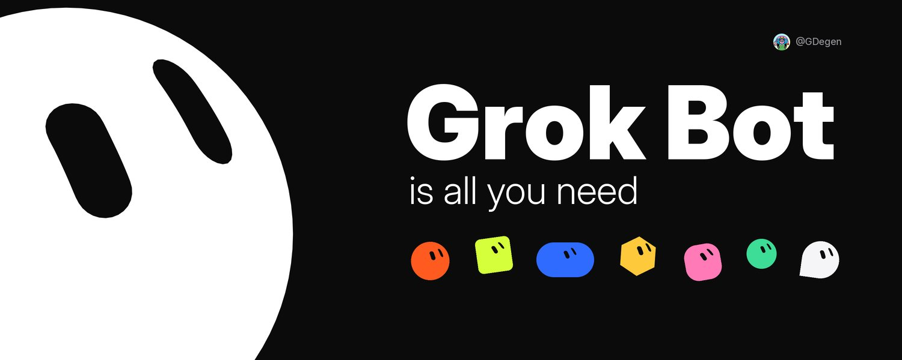
开头是强判断：他觉得很多人还没意识到 Grok Bot 有多强，一年后「有在用跟沒在用」的人差距会大到难以想象。
以前一个人做内容，研究、找題目（找题）、寫稿、回留言、經營社群，全部自己来，一天就没了；现在都交出去，他只看结果、做决定。
全文六块：每天「在跑什麼」；一条 reply 冲到 53,391 曝光的案例；为什么换掉 Hermes 和小龙虾；对一般「散戶好在」哪；为什么差距会越拉越大；怎么开始，「我必裝的 4 個 bot」。
补充：原文是繁体中文，口语很重（含粗口）；本页用简体转述，引用短语保留原字。
他每天在跑什么
原文 · 日常reply guy：每小时自动扫他挑好的 100 個大帳號，值得回的就用他的口吻回，他不动手。
outreach：「要 DM 誰、怎麼開口」，Bot 先整理好。
交易研究：「消息、數據、方向」有专门的 Bot 盯着。
宣发：「互推群的按讚、留言、貼連結」，一轮跑完。
每天的贴文：找題目、寫稿、配圖（配图），再「建議幾點發」，他早上看一眼。
过去要好几个人的活，现在是他一个人加 20 幾個 bot。唯一原则：一个 bot 只做一件事；每个 Bot 像一个员工，会互相传话、交接。他说以前在 Claude 上做不到：Claude 之间能共享记忆，但不能互相对话、交办事情。
补充：reply guy 和宣发两条是「以你的名义自动发言」。这和 @poteto 一页里蒸馏例程「禁止代发帖」、SIAxiom 说的「监测 Bot 不能擅自发布」正好相反；照做前先想清楚平台规则和账号风险，起步时建议先让它只出草稿。
补充：@poteto 主张「少而精」，GDegen 是 20 多个单一职责 Bot；两种都能跑，区别在你愿意花多少精力维护。
一条 reply，53,391 曝光
原文 · 案例以前要请人当 reply guy 经营社媒，现在不用。Grok Bot 除了回复还能监控，能每分钟把你的 reply list 扫一遍。
10/26 它自动回了一个大账号，那天他的 X 曝光冲到 53,391。
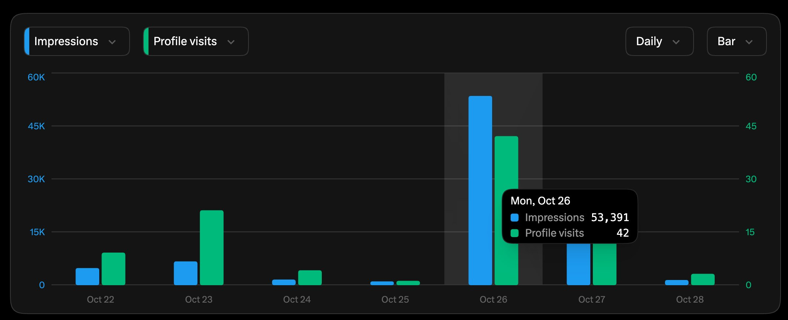
补充：未确认：53,391 是否全部来自那一条自动回复，图上看不出；本页也没能找到那条回复本身。另外「每分钟扫一次」会持续消耗额度，文中没给成本。
为什么换掉 Hermes 和小龙虾
原文 · 对比Claude 的痛点：对话一长就要压缩，压完前面交代的规则就断了；截图一多又爆上限，只好开新对话重讲。
Hermes 和小龙虾的痛点：要自己处理一堆技术问题；MCP 授权出去，不知道哪天出事；软件要自己升级，万一装到有毒的，账号可能被盗。
他的体验：用到现在还没遇过记忆断掉；并说有 Elon 背书，不太担心安全性。
补充：未确认：「没遇过记忆断掉」是个人体验；「有背书所以安全」是他的看法，不是安全论证。账号权限照样要自己管。
实用 tip：所有 bot 共用同一台电脑，Telegram 这类要登录的，只让一个 bot 登录，其他 bot 找它拿数据，否则会一直被登出。
补充：这和 SIAxiom 引用的官方说法一致——同一账户下的 Bot 共享云端电脑和浏览器登录状态。
对一般散户好在哪
原文 · 散户一个人没团队也行，开几个 bot 就像多了几个员工；规则交代一次它会记着、到点自己跑；不用会写程序，也不用架 server；省下的时间拿去想策略、「看盤都好」。
他手上的 idea：用 TikTok 跟 IG Reels 测市场（grok bot 管整条流水线）、Polymarket 钱包跟单分析、Luma 活动报名（跑会神器）、空投任務追蹤、reply guy、機票跟住宿降價通知、每天追蹤我飲食。
以前想想就算了的 idea，现在开一个 bot 就能先跑起来验证。
补充：钱包跟单、空投这类涉及资金的，Bot 只做信息整理，下单和签名留给自己。
为什么差距会越拉越大
原文 · 品味他的判断：IP 只会越来越贵，「有價值」又「有影響力的個人品牌」，人人都想要；人力越来越便宜、AI 什么都能做时，品味越来越重要。
「寫稿、找題目、回留言這些」bot 都能做，但「要講什麼、站什麼角度、什麼東西值得發」还得自己定。他说 when you have good taste，这会决定你下个十年。
所以他用 Grok Bot 除了省时间，更多是拿来 打造个人品牌（personal brand）：重复的事丢给 bot，自己专心想要讲什么。
怎么开始：必装的 4 个 bot
原文 · 必装Grok Bot 自带一个市场（marketplace），里面是别人预先配好（preset）的 agent，装了就能用。他推荐 4 个：
1. dr eggbot（他说「必装」）：给你的 agent 做健检，把设计补完整，相当于从 B+ 帮手升到 A+ 小秘书。
2. Humanizer：降 AI 味；他认为别人一闻到 AI 味就直接滑走。
3. last30days：找话题；一个话题过去 30 天大家在讲什么，一次扫完，你就知道哪里还有空间。
4. Researchy：验证资料；做个人 IP，说的话首先要可信，它帮你查证数字和消息，每条附来源和日期。
补充：dr eggbot 和 Researchy 的功能介绍只在本页 SIAxiom 篇写一次，这里只留 GDegen 自己的说法；SIAxiom 自己说 Researchy 缺少独立评测，「一发文就不会被抓包」这类效果本页标「未确认」。Humanizer 与 last30days 本页没有打开核对，标「未确认」。
收尾：他推荐给很多人，大家听完觉得厉害，但诱因不够大没去装；所以他认为已经在用的人「贏過 99.99% 的人」，并邀请大家交流用法。
把一个博主「蒸馏」成 Bot：做观点摘要，不冒充本人
gbroai 分享的用法：让 Grok Bot 读完一位博主的全部推文，之后每天追他的新推文和播客，持续更新，变成一个随时能问的「专属顾问」。这页讲清他的做法，也把边界写在前面：它做的是这个人公开观点的摘要和引用，不是这个人本人，不能以他的名义说话。
链接：原帖 @gbroai
他怎么做：先读全量，再每天追更
原文 · 做法gbroai 把这叫作「蒸馏」一位很厉害的博主，做法只有两步。
第 1 步，打底：让 Bot 读完这位博主所有的推文。
第 2 步，追更：每天监控他新增的推文和播客，并且每天更新这个 BOT。
效果：想问这个人的任何问题，都可以先问它；每位你欣赏的博主都能有一个专属 BOT，而且会与时俱进，他有新观点就会融进去。
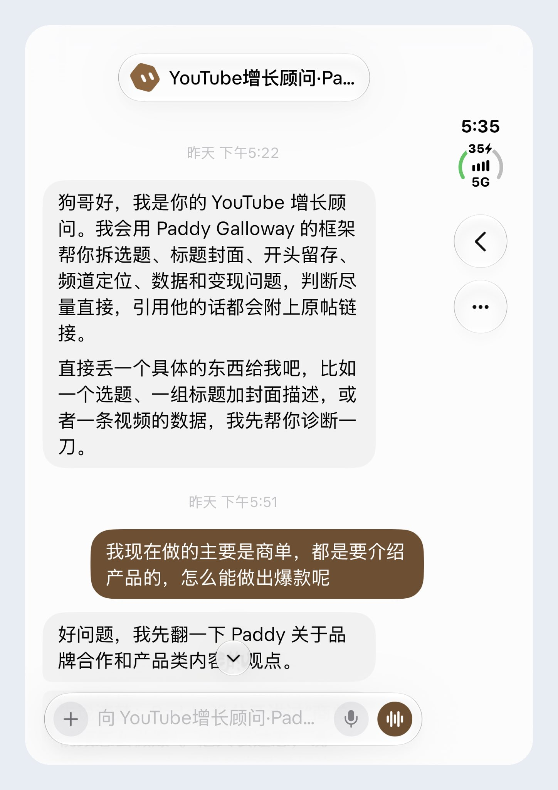
边界：观点摘要，不冒充本人
原文 · 边界补充：这类 Bot 本质是「某人公开观点的检索 + 摘要」。它回答的是「按他公开说过的话，他大概会怎么看」，不等于他本人真的这么想，更不能替他表态。
补充：截图里的写法值得照着做——名字叫「XX 增长顾问」而不是博主本名，开场就说明是「用他的框架」，引用都附原帖链接。
补充：对外别用它以博主口吻发帖、回复或私信，也别做成可以被别人误认成本人的公开 Bot；只在你自己的对话里用。
补充：他没说过的问题，让 Bot 明说「原帖里没有相关观点」，并把自己的推断和原话分开标注，不要编一句像他的话。
自己做一个时可以这样交代
原文 · 交代补充：（本页示例，不是原帖内容）：「读完 @某博主 的公开推文，之后每天检查他的新推文和播客。回答时先说是基于他的公开内容整理，每个观点附原帖链接和日期；找不到依据就说没有；不要模仿他的口吻说成他本人的话，也不要以他的名义对外发布任何内容。」
补充：「全部推文」可能很多，先限定近一两年或某个主题，跑通再扩。播客要靠文字稿或转写，能不能自动拿到取决于平台，原帖没讲细节，标「未确认」。
原帖全文很短，就是上面两步加一张截图：gbroai 原帖。
KinGao 的多 harness 接入：他怎么做，风险在哪
KinGao 的思路：让 Grok Bot 的「总管 Bot」新建子 Bot，子 Bot 在云电脑里登录你自己的 Codex、Claude Code、Gemini、DeepSeek Harness 或 Muse，活交给它们干，花的是各家的额度。这页只讲清他的做法和背后的机制，再把风险和没核实的地方列出来；不给照抄就能装的步骤，原帖链接在文末。
链接：主帖 @KinGao476942 · Claude Code 旧帖 · DeepSeek Harness 旧帖 · Muse 旧帖
导读：总管 Bot 调度外部 Agent
原文 · 导读主帖想一次讲清怎么把 Codex、Claude Code、Gemini、DeepSeek Harness、Muse 都接进 Grok Bot。他的卖点是额度：给总管 Bot 发一段「焚决」（他对提示词的叫法），之后就不缺 Bot 额度。
他的收尾：接完后 Grok bot 就成了能调用各家 Agent 额度的「万能军团」。
补充：（本页归纳）：机制都一样——总管 Bot 新建一个专职子 Bot；子 Bot 在 Grok Bot 的云电脑里装好对方的命令行工具或网页登录，用你本人的账号；之后某类任务交给它，额度从那家扣。
五种接法各是什么
原文 · 五种接法第 1 条：Codex：子 Bot 通过云电脑的 cli 登录你的 Codex 账号，他把生图任务、中大型的调研和编程任务交给它，用的是 Codex 的额度。
第 2 条：Claude Code：同样是云电脑 cli 登录你的 Claude Code 账号，用来编程和视频剪辑，扣 CC 的额度。他说已经稳定用了两个月；10 月 6 日的旧帖写的是一个多月。
第 3 条：Gemini（他说文案强）：通过 Antigravity cli 接 Gemini，默认 Argon 模型，并授权子 Bot 用你的谷歌账号登录；他提到要先在云浏览器登好美区谷歌账号，中国地区账号可改用网页版，或手动改成美国。
第 4 条：DeepSeek Harness（他说省额度、编程强）：在云电脑终端按 GitHub 文档（deepseek-ai/deepseek-harness）装 DeepSeek Harness，默认用 DeepSeek V4.1 Flash 编程，装好后由你输入 api key。旧帖说这个模型前一天刚更了小版本，配自家 Harness 才发挥得出来。
第 5 条：Muse（他说有几百亿 Token 额度）：借 muse2api 这个仓库（先看下一节风险）新建 Muse bot，让它到云电脑的 Chrome 中登录你自己的 Muse 账号（验证码手动输），再生成点东西，确认只扣 Muse 的额度。
Muse 旧帖细节：他说接了 Muse，有 300 亿 Token 额度，写文章、生成代码、生图、生视频全靠它。旧帖分 3 步：第 1 步把 muse2api 交给 Grok bot 建 Muse bot，这个仓库把浏览器中已登录的 Muse 包成别的编程工具能调的接口；第 2 步在云电脑 Chrome 登录，插件自动取 Cookie 传数据；第 3 步让 Muse bot 自测，确认接入是否顺利、是否只扣 Muse 额度，出 Bug 他说 Bot 会自己修。他说做完就能用上代码生成、文生图、图生图、图生视频等所有操作。
补充：本页刻意不复述完整提示词和安装命令。想看原文请点上面的原帖链接，先读完下一节的风险再决定。
风险：账号、凭据、条款
原文 · 风险补充：凭据放在共享电脑上。同一账户下的 Bot 共用一台云电脑和浏览器登录状态（SIAxiom、GDegen 两页都提到）。你把 Codex、Claude Code、谷歌账号登进去，等于你所有 Bot 都可能碰得到这些会话。
补充：api key 别贴在聊天里。DeepSeek 那条要你输入 api key；能放进 vault 就放 vault，别让它出现在对话记录或例程日志里。
补充：服务条款。把个人订阅账号交给另一个 Agent 自动调用、修改谷歌账号地区，各家条款怎么规定本页没有核对，可能触发风控或封号，标「未确认」。
补充：muse2api 是逆向封装。按它的仓库描述，是把 Muse 网页端逆向成 OpenAI 兼容接口，靠浏览器会话和 Cookie 工作，带多账号轮转和自动续期。这类第三方仓库能读到你的登录会话，装之前要自己看代码、确认来源；Muse 一方是否允许这样用，未确认。
补充：额度会怎么扣。「再也不缺额度」只是把消耗挪到别家，别家的额度和费用照样会用完；他让 Muse bot 自测「只扣 Muse」，这种自检结果也要你自己去对账单。
没核实的地方
原文 · 未核实补充：未确认：Gemini 的 Antigravity cli 和 Argon 模型、DeepSeek V4.1 Flash 的版本说法，本页没有打开官方文档核对。
补充：未确认：Muse「300 亿 / 几百亿 Token 额度」的来源和期限，原帖没有给出处。
补充：未确认：「稳定用了两个月」「出 Bug 会自己修」是个人体验，没有可复现的记录。
本页核对过的只有：主帖和三条旧帖的全文（X API），以及两个 GitHub 仓库确实存在——deepseek-ai/deepseek-harness（描述「Everything is a Plugin」，MIT）、czg86389-hub/muse2api（描述：Muse 逆向封装为 OpenAI 兼容接口，支持对话、文生图、文生视频/图生视频、多账号池轮转与 48h 自动续期；MIT）。原帖：主帖。